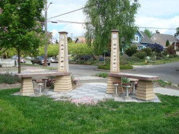
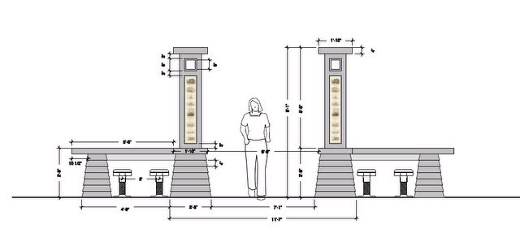
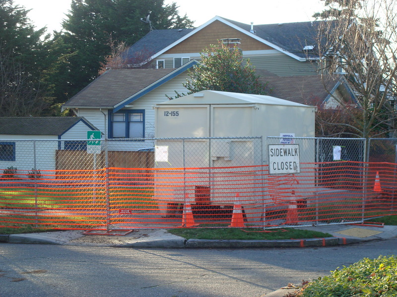

<?xml version="1.0" encoding="UTF-8"?><rss version="2.0"
	xmlns:content="http://purl.org/rss/1.0/modules/content/"
	xmlns:wfw="http://wellformedweb.org/CommentAPI/"
	xmlns:dc="http://purl.org/dc/elements/1.1/"
	xmlns:atom="http://www.w3.org/2005/Atom"
	xmlns:sy="http://purl.org/rss/1.0/modules/syndication/"
	xmlns:slash="http://purl.org/rss/1.0/modules/slash/"
	>

<channel>
	<title>Meetings &#8211; Friends of Ballard Corners Park</title>
	<atom:link href="http://ballardcornerspark.org/ballardcornerspark/category/meetings/feed/" rel="self" type="application/rss+xml" />
	<link>http://ballardcornerspark.org/ballardcornerspark</link>
	<description>Just another WordPress weblog</description>
	<lastBuildDate>Tue, 12 Apr 2016 16:55:53 +0000</lastBuildDate>
	<language>en-US</language>
	<sy:updatePeriod>hourly</sy:updatePeriod>
	<sy:updateFrequency>1</sy:updateFrequency>
	<generator>https://wordpress.org/?v=4.7.2</generator>
	<item>
		<title>Highlighting the Park</title>
		<link>http://ballardcornerspark.org/ballardcornerspark/2011/06/highlighting-the-park/</link>
		<pubDate>Fri, 03 Jun 2011 02:07:24 +0000</pubDate>
		<dc:creator><![CDATA[David Folweiler]]></dc:creator>
				<category><![CDATA[Design]]></category>
		<category><![CDATA[Meetings]]></category>
		<category><![CDATA[News]]></category>

		<guid isPermaLink="false">http://ballardcornerspark.org/ballardcornerspark/?p=1285</guid>
		<description><![CDATA[I went to a City Council committee meeting today.  They highlight a park each month and this month it was our turn.  You can watch the meeting on the Seattle Channel. My presentation is at about 2:15. Seattle Channel Video can be played in Flash Player 9 and up]]></description>
				<content:encoded><![CDATA[<p>I went to a City Council committee meeting today.  They highlight a park each month and this month it was our turn.  You can watch the meeting on the Seattle Channel.</p>
<p>My presentation is at about 2:15.</p>
<p><object id="scPlayer" classid="clsid:d27cdb6e-ae6d-11cf-96b8-444553540000" width="480" height="380" codebase="http://download.macromedia.com/pub/shockwave/cabs/flash/swflash.cab#version=6,0,40,0"><param name="name" value="scPlayer" /><param name="src" value="http://www.seattlechannel.org/videos/player5.swf?config=http://www.seattlechannel.org/videos/videoConfig.asp?ID=2051141&amp;plugins=http://www.seattlechannel.org/videos/swfobject/gapro.swf&amp;gapro.accountid=UA-22358727-1" /><param name="allowfullscreen" value="true" /><param name="allowscriptaccess" value="always" /><embed id="scPlayer" type="application/x-shockwave-flash" width="480" height="380" src="http://www.seattlechannel.org/videos/player5.swf?config=http://www.seattlechannel.org/videos/videoConfig.asp?ID=2051141&amp;plugins=http://www.seattlechannel.org/videos/swfobject/gapro.swf&amp;gapro.accountid=UA-22358727-1" allowscriptaccess="always" allowfullscreen="true" name="scPlayer"></embed></object></p>
<div style="font-family:arial,verdana;font-size:smaller;"><a href="http://www.seattlechannel.org">Seattle Channel Video</a> can be played in <strong><a href="http://www.adobe.com/go/getflashplayer">Flash Player 9 and up</a></strong></div>
]]></content:encoded>
			</item>
		<item>
		<title>Donation to Others</title>
		<link>http://ballardcornerspark.org/ballardcornerspark/2010/04/donation-to-others/</link>
		<pubDate>Fri, 30 Apr 2010 05:56:40 +0000</pubDate>
		<dc:creator><![CDATA[David Folweiler]]></dc:creator>
				<category><![CDATA[Fundraising]]></category>
		<category><![CDATA[Meetings]]></category>

		<guid isPermaLink="false">http://ballardcornerspark.org/ballardcornerspark/?p=1103</guid>
		<description><![CDATA[It is a bit odd.  We are an organization with no financial assets.  The Friends of Ballard Corners has no bank account, no officers (on paper), no board, no nothing.  We rely on Groundswell NW to handle all our money as our &#8220;fiscal sponsor&#8221;.  Any money we receive goes straight to them.  Any money we [&#8230;]]]></description>
				<content:encoded><![CDATA[<div id="attachment_1107" style="width: 310px" class="wp-caption alignnone"><a href="../../../wp-content/uploads/2010/04/DSC06984.JPG"></a><p class="wp-caption-text">corner store is open!</p></div>
<p>It is a bit odd.  We are an organization with no financial assets.  The Friends of Ballard Corners has no bank account, no officers (on paper), no board, no nothing.  We rely on Groundswell NW to handle all our money as our &#8220;fiscal sponsor&#8221;.  Any money we receive goes straight to them.  Any money we &#8220;spend&#8221; comes straight from them.  In return, they receive a 5% cut of all our donations &#8211; this helps them fund their operations.</p>
<p>It seems strange to me that we would give money from our account at a non-profit to another non-profit.  No one gets a write-off.  But, nonetheless, we were inclined to want to thank two organizations &#8211; <a title="Ballard Boys &amp; Girls Club" href="http://www.ballard.positiveplace.org/" target="_blank">Ballard Boys &amp; Girls Club</a> and <a title="Ballard Historical Society" href="http://www.ballardhistory.org/" target="_blank">Ballard Historical Society</a> for their help.</p>
<p>The Ballard Boys &amp; Girls Club hosted virtually all of our meetings, including the large public meetings.  The Ballard Historical Society helped with our historical photos and writing up the verbiage of the panels.  In return, we wanted to support them.  We did it with profuse thanks and a check for $400 each.</p>
]]></content:encoded>
			</item>
		<item>
		<title>Camille and Kasey speak of the importance of parks in the neighborhood</title>
		<link>http://ballardcornerspark.org/ballardcornerspark/2010/03/camille-and-kasey-speak-of-the-importance-of-parks-in-the-neighborhood/</link>
		<pubDate>Mon, 15 Mar 2010 05:18:07 +0000</pubDate>
		<dc:creator><![CDATA[David Folweiler]]></dc:creator>
				<category><![CDATA[Meetings]]></category>

		<guid isPermaLink="false">http://ballardcornerspark.org/ballardcornerspark/?p=1019</guid>
		<description><![CDATA[A request came in from Groundswell NW&#8216;s President Andrea Faste to have Camille and her friends come to their annual meeting and speak about the importance of parks in the neighborhood. I asked Camille and she said, &#8220;sure!&#8221; So, she and her best friend Kasey got up in front of 30-40 people (including the mayor) [&#8230;]]]></description>
				<content:encoded><![CDATA[<p>A request came in from <a title="Groundswell NW" href="http://www.groundswellnw.org/" target="_blank">Groundswell NW</a>&#8216;s President Andrea Faste to have Camille and her friends come to their annual meeting and speak about the importance of parks in the neighborhood.  I asked Camille and she said, &#8220;sure!&#8221;  So, she and her best friend Kasey got up in front of 30-40 people (including the mayor) and communicated why parks are important to them and kids in general.  They did great.</p>
<p><a title="Seattle Mayor" href="http://www.cityofseattle.net/Mayor/" target="_blank">Seattle Mayor Mike McGinn</a> heard the whole thing and accidentally took my seat when I went up to do a Q&amp;A with Camille.  I thought the Q&amp;A thing would facilitate Camille&#8217;s public speaking performance.</p>

<a href='../../../2010/03/camille-and-kasey-speak-of-the-importance-of-parks-in-the-neighborhood/dsc06644/trackback/index.html'></a>
<a href='../../../2010/03/camille-and-kasey-speak-of-the-importance-of-parks-in-the-neighborhood/dsc06645/trackback/index.html'></a>
<a href='../../../2010/03/camille-and-kasey-speak-of-the-importance-of-parks-in-the-neighborhood/p1010132/trackback/index.html'></a>
<a href='../../../2010/03/camille-and-kasey-speak-of-the-importance-of-parks-in-the-neighborhood/p1010138/trackback/index.html'></a>
<a href='../../../2010/03/camille-and-kasey-speak-of-the-importance-of-parks-in-the-neighborhood/p1010139/trackback/index.html'></a>

]]></content:encoded>
			</item>
		<item>
		<title>Grand Opening!</title>
		<link>http://ballardcornerspark.org/ballardcornerspark/2009/07/grand-opening/</link>
		<comments>http://ballardcornerspark.org/ballardcornerspark/2009/07/grand-opening/#comments</comments>
		<pubDate>Mon, 13 Jul 2009 17:40:44 +0000</pubDate>
		<dc:creator><![CDATA[David Folweiler]]></dc:creator>
				<category><![CDATA[Events]]></category>
		<category><![CDATA[Meetings]]></category>

		<guid isPermaLink="false">http://ballardcornerspark.org/ballardcornerspark/?p=748</guid>
		<description><![CDATA[We&#8217;re planning for a grand opening after Phase 3 is complete.  What would you like to see in a celebration? food? drink? music? guided tours of the plantings? games? lutefisk? fresh pressed cider from apples in the park? I don&#8217;t really know what to plan for.  Help us design a party!  Post your comment below.]]></description>
				<content:encoded><![CDATA[<p>We&#8217;re planning for a grand opening after Phase 3 is complete.  What would you like to see in a celebration?</p>
<p>food? drink? music? guided tours of the plantings? games? lutefisk? fresh pressed cider from apples in the park?</p>
<p>I don&#8217;t really know what to plan for.  Help us design a party!  Post your comment below.</p>
]]></content:encoded>
			<wfw:commentRss>http://ballardcornerspark.org/ballardcornerspark/2009/07/grand-opening/feed/</wfw:commentRss>
		<slash:comments>3</slash:comments>
		</item>
		<item>
		<title>Steering Committee Meeting</title>
		<link>http://ballardcornerspark.org/ballardcornerspark/2009/07/steering-committee-meeting-2/</link>
		<pubDate>Thu, 09 Jul 2009 00:57:32 +0000</pubDate>
		<dc:creator><![CDATA[David Folweiler]]></dc:creator>
				<category><![CDATA[construction]]></category>
		<category><![CDATA[Design]]></category>
		<category><![CDATA[Meetings]]></category>

		<guid isPermaLink="false">http://ballardcornerspark.org/ballardcornerspark/?p=738</guid>
		<description><![CDATA[In what may have been the very last steering committee meeting, Barker presented the corner store design and we hashed out some details with Nathan Arnold, the contractor.]]></description>
				<content:encoded><![CDATA[<p>In what may have been the very last steering committee meeting, Barker presented the corner store design and we hashed out some details with Nathan Arnold, the contractor.</p>

]]></content:encoded>
			</item>
		<item>
		<title>Corner Store Decision</title>
		<link>http://ballardcornerspark.org/ballardcornerspark/2009/04/corner-store-decision/</link>
		<pubDate>Fri, 17 Apr 2009 23:44:51 +0000</pubDate>
		<dc:creator><![CDATA[David Folweiler]]></dc:creator>
				<category><![CDATA[construction]]></category>
		<category><![CDATA[Design]]></category>
		<category><![CDATA[Meetings]]></category>

		<guid isPermaLink="false">http://ballardcornerspark.org/ballardcornerspark/?p=645</guid>
		<description><![CDATA[We need your opinion regarding additional work on the park.  Please take time to review the choices at the bottom of the email and respond with your preference. Please respond by Wednesday, 22 Apr (Earth Day!). Ballard Corners Park is nearing completion.  If you go by the park, be sure to check out the concrete [&#8230;]]]></description>
				<content:encoded><![CDATA[<p class="MsoNormal"><strong><em><span style="font-size: 10pt; font-family: Arial;">We need your opinion regarding additional work on the park.  Please take time to review the choices at the bottom of the email and respond with your preference.<span> </span>Please respond by Wednesday, 22 Apr (Earth Day!).<span> </span></span></em></strong></p>
<p class="MsoNormal"><span style="font-size: 10pt; font-family: Arial;"> </span></p>
<p class="MsoNormal"><span style="font-size: 10pt; font-family: Arial;">Ballard</span><span style="font-size: 10pt; font-family: Arial;"> Corners  Park</span><span style="font-size: 10pt; font-family: Arial;"> is nearing completion.  If you go by the park, be sure to check out the concrete living room furniture being created by Nathan Arnold.  Nathan&#8217;s very proud of his work and shows it off very willingly to passersby.<span> </span>Be sure to say hello.  The grass is growing and needs to be mowed twice before the contractor can take the fence down.  The first mowing was occurring this morning as I drove to work.<span> </span></span></p>
<p class="MsoNormal"><span style="font-size: 10pt; font-family: Arial;"> </span></p>
<p class="MsoNormal"><strong><span style="font-size: 10pt; font-family: Arial;">Background on Corner Store</span></strong></p>
<p class="MsoNormal"><span style="font-size: 10pt; font-family: Arial;">There is one element of the park that has not yet been completed.  For those of you involved in the park design workshops in 2006, we batted around a lot of ideas.  The community decided that it liked the play structure, curving sidewalk, rain garden, “living room”, and the corner store homage.  All of this has been completed, excepting the corner store.  The corner store has not been constructed because the bids we received for constructing it in its original format were too high.  Of the desired options, the community preferred the raingardens and living room over the corner store in the case of insufficient funding. </span></p>
<p class="MsoNormal"><span id="more-645"></span></p>
<p class="MsoNormal"><span style="font-size: 10pt; font-family: Arial;"> </span></p>
<p class="MsoNormal"><span style="font-size: 10pt; font-family: Arial;">The steering committee has been working hard with John Barker, our landscape architect, to determine if some version of the corner store could be constructed.  The concept of the corner store is that it would honor the corner stores that used to be on lots of corners in Ballard and especially Bill Boutin&#8217;s corner store on the park site.<span> </span>The corner store would bond the present and the historical, letting people know what used to be on the park site.  Some say it puts the “corner” in Ballard Corners Park.<span> </span>The corner store is designed to have a playful and whimsical nature to it.<span> </span>Kids could play “store” or sell lemonade.<span> </span>Adults could sit with a coffee and/or newspaper.<span> </span>Neighbors could chat.<span> </span>Families could picnic at the counters.<span> </span>Historical photos and oral histories would be set into the columns and possibly the countertops.<span> </span></span></p>
<p class="MsoNormal"><span style="font-size: 10pt; font-family: Arial;"> </span></p>
<p class="MsoNormal"><span style="font-size: 10pt; font-family: Arial;">Nathan Arnold, the concrete artist who is doing the “living room” furniture has expressed interest in building the concrete portions of the new corner store design.<span> </span>Preliminary estimates appear to be within our budget for completion.<span> </span></span></p>
<p class="MsoNormal"><span style="font-size: 10pt; font-family: Arial;"> </span></p>
<p class="MsoNormal"><span style="font-size: 10pt; font-family: Arial;">Here&#8217;s a <strong>Depression-era photo</strong> of the store on the northern portion of the park site.</span></p>
<p class="MsoNormal"><a href="../../../../images/store&#32;full&#32;size.jpg"></a></p>
<p class="MsoNormal">
<p class="MsoNormal"><strong><span style="font-size: 10pt; font-family: Arial;">Revised Corner Store Design</span></strong></p>
<p class="MsoNormal"><span style="font-size: 10pt; font-family: Arial;"> </span></p>
<p class="MsoNormal"><span style="font-size: 10pt; font-family: Arial;">Barker and his colleagues originally created an entry feature that honored the corner store with four columns, two counters with swiveling stools, and an overhead metal lattice.  A lack of adequate funding requires us to rethink our original design.  Barker has come up with a plan to scale the original design back and still allow us to fulfill this design vision.  Currently, there are only two columns, the counters are lowered and downsized, and the trellis is gone.  There are a variety of opinions regarding the construction of such a feature.  We&#8217;d like your opinion.  Here is the revised corner store design.<span> </span>Click on this link or the picture for a closer look (<a href="http://ballardcornerspark.org/ballardcornerspark/category/meetings/index.php/2009/04/14/new-concept-for-corner-store/">http://ballardcornerspark.org/ballardcornerspark/index.php/2009/04/14/new-concept-for-corner-store/</a>). <span> </span></span></p>
<p class="MsoNormal"><span style="font-size: 10pt; font-family: Arial;"> </span></p>
<p class="MsoNormal"><a title="pdf of corner store design with details" href="../../../wp-content/uploads/2009/04/bcdetailsentryadj04909.pdf"></a></p>
<p class="MsoNormal"><span style="font-size: 10pt; font-family: Arial;"> </span></p>
<p class="MsoNormal"><span style="font-size: 10pt; font-family: Arial;">The columns and plinths would be made of concrete.<span> </span>The color and texture would mimic the bevel-sided homes in the neighborhood.<span> </span>The countertops would be made of a very durable laminate, similar to what is seen on interpretive signs.<span> </span>The stools would have a “bomb-proof” stainless steel bases and durable wood top (i.e. purpleheart as seen on the foundation wall caps).<span> </span></span></p>
<p class="MsoNormal"><span style="font-size: 10pt; font-family: Arial;"> </span></p>
<p class="MsoNormal"><span style="font-size: 10pt; font-family: Arial;">John Barker put a mock up of the corner store entry on the park site.  It is crude and is just there to show the size, location, and shape of the corner store.  It also doesn&#8217;t include the swiveling stools; you&#8217;ll have to imagine those.<span> </span>The store is set back from the sidewalk to allow pedestrians to pass and not be within the SDOT right-of-way which extends approximately two feet in from the sidewalk.<span> </span></span></p>
<p class="MsoNormal"><span style="font-size: 10pt; font-family: Arial;"> </span></p>
<p class="MsoNormal"><a href="../../../wp-content/uploads/2009/04/committee-meets-in-corner-store.bmp"></a></p>
<p class="MsoNormal"><span style="font-size: 10pt; font-family: Arial;"> </span></p>
<p class="MsoNormal"><span style="font-size: 10pt; font-family: Arial;">The steering committee met in the corner store mock up to discuss options.<span> </span></span></p>
<p class="MsoNormal"><span style="font-size: 10pt; font-family: Arial;"> </span></p>
<p class="MsoNormal">
<p class="MsoNormal"><a href="../../../wp-content/uploads/2009/04/barker-in-entry.bmp"></a></p>
<p class="MsoNormal"><span style="font-size: 10pt; font-family: Arial;"> </span></p>
<p class="MsoNormal"><span style="font-size: 10pt; font-family: Arial;">John Barker in the entry of the mock up.<span> </span></span></p>
<p class="MsoNormal"><span style="font-size: 10pt; font-family: Arial;"> </span></p>
<p class="MsoNormal"><span style="font-size: 10pt; font-family: Arial;">What we need you to do (by Wednesday, 22 Apr –#x2018; Earth Day) is to tell us whether you&#8217;d like to have:</span></p>
<p class="MsoNormal"><span style="font-size: 10pt; font-family: Arial;"> </span></p>
<p class="MsoNormal"><strong><span style="font-size: 10pt; font-family: Arial;">Option A</span></strong><span style="font-size: 10pt; font-family: Arial;"> –#x2018; A scaled down corner store with columns, counters, and swiveling stools.  The columns would contain the donor tiles, historical photographs and information, and a major donor plaque.  The countertops could contain additional historic photos and oral history quotes. </span></p>
<p class="MsoNormal"><span style="font-size: 10pt; font-family: Arial;"> </span></p>
<p class="MsoNormal"><strong><span style="font-size: 10pt; font-family: Arial;">Option B –#x2018; </span></strong><span style="font-size: 10pt; font-family: Arial;">The columns with the donor tiles, historical photos, and major donor plaque, but with lower seating benches in place of the countertops.  There would be no swiveling stools.</span></p>
<p class="MsoNormal"><span style="font-size: 10pt; font-family: Arial;"> </span></p>
<p class="MsoNormal"><strong><span style="font-size: 10pt; font-family: Arial;">Option C –#x2018; </span></strong><span style="font-size: 10pt; font-family: Arial;">Just the columns with the donor tiles, historical photos, and major donor plaque.  No countertops, benches, or stools.</span></p>
<p class="MsoNormal"><span style="font-size: 10pt; font-family: Arial;"> </span></p>
<p class="MsoNormal"><strong><span style="font-size: 10pt; font-family: Arial;">Option D –#x2018; </span></strong><span style="font-size: 10pt; font-family: Arial;">I don&#8217;t want any </span><span style="font-size: 10pt; font-family: Arial;">additional park elements, just leave the park the way it is.<span> </span>There&#8217;s enough there already.<span> </span></span></p>
<p class="MsoNormal"><span style="font-size: 10pt; font-family: Arial;"> </span></p>
<p class="MsoNormal"><strong><span style="font-size: 10pt; font-family: Arial;">Option E –#x2018; </span></strong><span style="font-size: 10pt; font-family: Arial;">I trust the steering committee to make the best decision.<span> </span>I look forward to enjoying the park.<span> </span></span></p>
<p class="MsoNormal"><span style="font-size: 10pt; font-family: Arial;"> </span></p>
<p class="MsoNormal" style="margin-bottom: 12pt;"><span style="font-size: 10pt; font-family: Arial;">I want you to email me (David Folweiler &#8211; my email link is on the <a title="Contact information" href="../../../index.php/people/index.html">People page</a>) with your vote:  I like Option __ the best.  I&#8217;ll tally up the votes and that will allow us to make a collective decision the Seattle way! <span> </span>If you have additional questions, feel free to email me.  Or you can leave your vote in the comment section below.  Please leave your name.  Feel free to add your comments.  <span> </span></span></p>
]]></content:encoded>
			</item>
		<item>
		<title>Phase 2 Begins</title>
		<link>http://ballardcornerspark.org/ballardcornerspark/2008/12/phase-2-begins/</link>
		<pubDate>Fri, 05 Dec 2008 05:58:25 +0000</pubDate>
		<dc:creator><![CDATA[David Folweiler]]></dc:creator>
				<category><![CDATA[construction]]></category>
		<category><![CDATA[Meetings]]></category>
		<category><![CDATA[News]]></category>

		<guid isPermaLink="false">http://ballardcornerspark.org/ballardcornerspark/?p=536</guid>
		<description><![CDATA[Today marked a momentous date.  I signed a document directing Dariotis Construction to proceed.  It&#8217;s a document called a Notice to Proceed.  It says that they should begin construction and be &#8220;substantially&#8221; done in 100 calendar days (3/19/09) and physically complete in 120 calendar days (4/8/09) or be penalized $300 per day.  I gave Chris [&#8230;]]]></description>
				<content:encoded><![CDATA[<p>Today marked a momentous date.  I signed a document directing Dariotis Construction to proceed.  It&#8217;s a document called a Notice to Proceed.  It says that they should begin construction and be &#8220;substantially&#8221; done in 100 calendar days (3/19/09) and physically complete in 120 calendar days (4/8/09) or be penalized $300 per day.  I gave Chris an extra 5 days since the official &#8220;pre-con&#8221; (this is construction speak which I am trying hard to grasp) or pre-construction meeting won&#8217;t happen until 12/9.  It felt odd to have this sort of power.  I have this nagging feeling that Seattle City officials will suddenly yank the rug out from underneath me by saying that I did something really wrong.</p>
<p>John Barker and Jeff Mumma (from Barker Landscape Architects) and I met Chris Dariotis and his crew on site today to kick off construction.  Chris&#8217; crew moved the fence to the curb, set up a tool bin, and set up a bit of the erosion control (filter cloth in the catch basin).</p>
<p>Later, Will Stevenson came by because Jeff Mumma called him about a leak in the irrigation system.  It was nice to see him again.  There was a brief mention in the morning by Chris that he was considering using WS Contractors (our contractor for Phase 1) as a concrete subcontractor.  I admire their concrete work and approved of the idea.</p>
<p>Also, Jody Stewart came by with some fliers for the fence &#8211; mainly talking about donor tiles.  We put them up with zip ties.  Jonah (Jody&#8217;s infant son) and Gage (her aging Lab) looked on.  Gage pissed here and there and Jonah made cooing noises. The sun shone.  It was all pleasant.  Some day, I will watch as Jonah plays at the park and Gage waters the plants or rests in the park.</p>
<p><a href="../../../wp-content/uploads/2008/12/dsc02932.jpg"></a></p>
<p><span id="more-536"></span><a href="../../../wp-content/uploads/2008/12/dsc02933.jpg"></a></p>
<p><a href="../../../wp-content/uploads/2008/12/dsc02934.jpg"></a></p>
<p><a href="../../../wp-content/uploads/2008/12/dsc02935.jpg"></a></p>
]]></content:encoded>
			</item>
		<item>
		<title>Pre-Con Meeting</title>
		<link>http://ballardcornerspark.org/ballardcornerspark/2008/07/pre-con-meeting/</link>
		<pubDate>Thu, 10 Jul 2008 18:54:43 +0000</pubDate>
		<dc:creator><![CDATA[David Folweiler]]></dc:creator>
				<category><![CDATA[Meetings]]></category>

		<guid isPermaLink="false">http://ballardcornerspark.org/ballardcornerspark/?p=309</guid>
		<description><![CDATA[I attended a Pre-Construction meeting today at Barker&#8217;s office. Present were John Barker and Jeff Mumma of Barker Landscape Architects, Will and Jared Stevenson of WS Contractors, Virginia Hassinger and Chris Jewell of the Parks Department, and myself. There was a lot of paperwork stuff and we hashed out some things. Relevant to me were [&#8230;]]]></description>
				<content:encoded><![CDATA[<p>I attended a Pre-Construction meeting today at Barker&#8217;s office.  Present were John Barker and Jeff Mumma of Barker Landscape Architects, Will and Jared Stevenson of WS Contractors, Virginia Hassinger and Chris Jewell of the Parks Department, and myself.</p>
<p>There was a lot of paperwork stuff and we hashed out some things.  Relevant to me were the weekly meetings to take place on site at 7 AM on Thursdays, a need to pick out boulders for the play area (delegated to Rebecca), and a need to contract with a specialist to locate and assemble the play structure.</p>
]]></content:encoded>
			</item>
		<item>
		<title>Design Refinement</title>
		<link>http://ballardcornerspark.org/ballardcornerspark/2007/09/design-refinement/</link>
		<comments>http://ballardcornerspark.org/ballardcornerspark/2007/09/design-refinement/#comments</comments>
		<pubDate>Fri, 21 Sep 2007 22:16:36 +0000</pubDate>
		<dc:creator><![CDATA[David Folweiler]]></dc:creator>
				<category><![CDATA[Meetings]]></category>

		<guid isPermaLink="false">http://ballardcornerspark.org/ballardcornerspark/index.php/2007/09/21/design-refinement/</guid>
		<description><![CDATA[The steering committee met with John Barker on 12 Sep 07 at his office. Gabriella, Rebecca, Gordon and I were in attendance. John showed us his latest designs, which include the simulations below. More is here. We talked about various design elements and their relationship to the space. (See the plan view here.) We were [&#8230;]]]></description>
				<content:encoded><![CDATA[<p>The steering committee met with John Barker on 12 Sep 07 at his office.  Gabriella, Rebecca, Gordon and I were in attendance.  John showed us his latest designs, which include the simulations below.  More is <a target="_blank" href="../../../wp-content/uploads/2007/09/bcornerssims91207.pdf">here</a>.</p>
<div style="text-align: center"></div>
<p align="center"></p>
<p align="left">We talked about various design elements and their relationship to the space.  (<a target="_blank" href="../../../wp-content/uploads/2007/09/ballardcornerscd90707.pdf">See the plan view here</a>.)  We were concerned about the distance from the sidewalk to the play area pinching off the grassy area.  We also debated the living room and decided to get rid of the coffee table in favor of a design element in the hardscape patio (i.e. area rug, mosaic, embedded metal element, etc..  We also talked at length about the corner store entry.  I wondered if the current design made the entry too massive.  Please post any comments you might have below (where it says &#8216;leave comments&#8217; in green).  We welcome commentary.</p>
<p align="left">Gabriella had suggestions about the plants.  We suggested she talk directly to Brenda at Barker&#8217;s office, who has been working on the planting plan.  The planting layout can be seen <a target="_blank" href="../../../wp-content/uploads/2007/09/planting-layout.pdf">here</a>.</p>
]]></content:encoded>
			<wfw:commentRss>http://ballardcornerspark.org/ballardcornerspark/2007/09/design-refinement/feed/</wfw:commentRss>
		<slash:comments>4</slash:comments>
		</item>
		<item>
		<title>Meeting with Stakeholders</title>
		<link>http://ballardcornerspark.org/ballardcornerspark/2007/08/meeting-with-stakeholders/</link>
		<pubDate>Fri, 24 Aug 2007 05:07:42 +0000</pubDate>
		<dc:creator><![CDATA[David Folweiler]]></dc:creator>
				<category><![CDATA[Meetings]]></category>

		<guid isPermaLink="false">http://ballardcornerspark.org/ballardcornerspark/index.php/2007/08/23/meeting-with-stakeholders/</guid>
		<description><![CDATA[Today, Davidya Kasperzyk, my son Daniel, and I met with many of the public entity stakeholders in developing the park. Jon Jainga (our project manager at Parks), Patricia Lopez (our project manager at Department of Neighborhoods), Jennifer Britton (SDOT), Mike Hendrix (SDOT), and Linden Mead (SDOT arborist) were all present. We seemed to all agree [&#8230;]]]></description>
				<content:encoded><![CDATA[<p>Today, Davidya Kasperzyk, my son Daniel, and I met with many of the public entity stakeholders in developing the park.  Jon Jainga (our project manager at Parks), Patricia Lopez (our project manager at Department of Neighborhoods), Jennifer Britton (SDOT), Mike Hendrix (SDOT), and Linden Mead (SDOT arborist) were all present.</p>
<p>We seemed to all agree that the project is worthy of going forward, had no insurmountable hurdles, and was well-funded.<span id="more-169"></span></p>
<p>I opened by giving a brief history of the project from our perspective.  I concluded by saying that the community was very vested in three elements &#8211; the raingardens, meandering sidewalk, and the play structure.  I said that it seemed to me that the community also wanted the corner store entry, community garden, and living room, but perhaps at a slightly lower priority.  (I apologize if I offend anyone here on the priority list; this is merely my interpretation of what I heard at the community meetings in terms of numbers of people expressing support for various design elements.)</p>
<p>Jon Jainga expressed the directive he had been given by Kevin Stoops at Parks.  He was informed that the $150,000 from the Pro-Parks Levy was in jeopardy if the design development didn&#8217;t proceed to construction documents (CDs) by the end of the year.  Special consideration was given to allow construction to carry on into 2008, but CDs must be done by the end of 2007.  Since there is no Memorandum of Agreement (MOA) between the Friends of Ballard Corners Park (us) and Parks and we have directed the additional funds to be given to Friends (via Groundswell NW, our fiscal sponsor), Parks only shows $170,000 in their Capital Improvement Project (CIP) account.  Therefore, they can only contract with John Barker (our landscape architect) for 13% of the Maximum Allowable Construction Contract (MACC), which is a bit under $15,000 (see <a href="../../../index.php/2007/08/21/snags-in-the-development-process/index.html">the prior blog post</a>).  Verbal agreement has been reached between Jon and John to perform the &#8220;base bid&#8221; design development for the 13% amount.  The &#8216;base bid&#8217; allows for the essential infrastructure of the park to be built.  &#8220;Additives&#8221; would also be developed at the same time, with the funding for designing these elements coming from the Friends.  The raingardens, corner store entry, living room structure, etc. will all be additives.</p>
<p>Jon wants the bids to be opened in mid-January.  Working backwards on the schedule, 100% (completed CDs) will have be done by 12/1/07 in order to be reviewed by the Department of Executive Administration (DEA).  &#8220;Pro-Tech&#8221; review (an internal Parks process) will be done in early October.  Barker is on board to do this timeline.  He will develop the base bid and the additives at the same time.  All of the elements will be sent out to bid simultaneously and the contractors will be required to price the base bid and all the additives separately.</p>
<p>This has the advantage of allowing us to fund the elements we have funding for, and delaying elements we will need to raise additional fund for.</p>
<p>Jennifer spoke to the permit process, a need for a MOA in place between Parks and SDOT for maintenance of the Right of Way (ROW) elements.  That is, Parks will maintain the ROW elements adjacent to the park.  She reiterated that we need that in place before applying for the permit.</p>
<p>Linden spoke about the trees in the planting strip adjacent to the proposed raingarden.  She said that the city has policy of not removing healthy, established trees.  If we choose to remove the cherries and maples along the 17th Ave side in order to put in more suitable trees for the raingardens, we will incur financial penalties, or be required to relocate and maintain the existing trees, and/or replace the trees two-for-one.  In short, she strongly encouraged us not to remove the trees and be careful about the raingarden design to avoid damaging them.</p>
<p>Jon also mentioned that 17th Avenue appears to be in a &#8220;Green Corridor&#8221; in the Ballard Neighborhood plan and changes might trigger a &#8220;Master Use Permit&#8221;.  This is apparently a difficult process to go through and should be avoided if possible.</p>
<p>Jennifer suggested that there are four possible solutions:</p>
<ul>
<li>don&#8217;t remove the trees and work around them (and use the south proposed raingarden as a drought tolerant buffer),</li>
<li>build the swales as not to disturb them, but still have the south raingarden,</li>
<li>relocate the trees on site, or</li>
<li>remove and replace the trees.</li>
</ul>
<p>There was some thought that the first two options were the least cumbersome.  I said that we need to have all the options on the table at this point.I said that John had mentioned capturing storm water from upstream catch basins.  We will look into getting Seattle Public Utilities (SPU) involved in the process.  Jennifer suggested that having SPU involved might trigger a need to go to the Department of Planning and Development (DPD) to get a master permit (or whatever it&#8217;s called) instead of just dealing with SDOT on the ROW issues.</p>
<p>Patricia kindly advised us that 25% of our match must be volunteer hours (news to me!).  Also, she said that if we use NMF funds for hiring an artist (or anyone else), we have to wait until we have a contract with NMF &#8211; some 6-8 weeks down the road.  She also said that she want to make sure that we (the Friends) have money in place to complete the process.</p>
<p>Jennifer advised that replacing concrete (to make the meandering sidewalk) might not be the best environmentally sensitive strategy, as the existing sidewalk is in good condition.  Jon suggested that placing any new concrete on Parks property might lower the threshold for triggering additional SDOT oversight.</p>
<p>Davidya asked about placing bollards at the corners to protect pedestrians and plantings.  Mike will look into the requirements.</p>
<p>I asked if Barker could do the drawing for the ROW issues.  Jennifer (and Leo in the permit area) both later said &#8216;no&#8217;, it has to be a civil engineer.</p>
<p>Jon addressed the park vehicle maintenance issues.  He said that if the vehicles enter the park, they need a 45&#8242; radius for truck and trailer.  We looked at the plan and didn&#8217;t see that was possible for our 10,000 square foot lot.  He said we could have them park along the curb, but we&#8217;d need a exempt vehicles space suitable, perhaps 50 feet worth to allow for a Ford F350 crew cab pickup truck and 25&#8242; trailer.</p>
<p>We also discussed that the plan did not yet outline placement of the 3-4 garbage recepticles (don&#8217;t we also need recycling?) and a bike rack (SDOT and Parks have different requirements).</p>
<p>Also, it was suggested that if we do the 5&#8242; trimming from the roadway (turning the 30&#8242; 17th Ave into the minimum 25&#8242; width residential street), that the bumpouts continue as far as allowed to avoid confusing parking.</p>
<p>We returned, yet again, the trees in the south parking strip.  It was suggested (recommended?) that we consider a &#8216;drought tolerant&#8217; planting bed, rather than a raingarden adjacent to avoid causing problems with the existing trees.</p>
<p>Finally, Jon will arrange a meeting with the Arts and Cultural Affairs office to see if they&#8217;ll help with our artistic elements.</p>
<p>If anyone made it this far through this long and convoluted blog post, comprehending the alphabetic soup of acronyms and following the process, I will personally give you a gold star and drink.</p>
]]></content:encoded>
			</item>
	</channel>
</rss>
